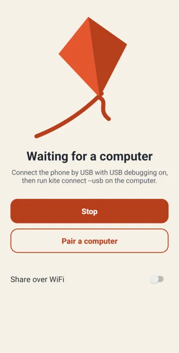
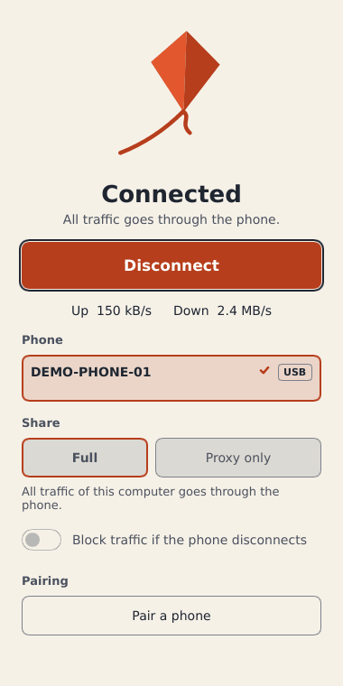

Tethering that keeps your phone's VPN
Kite shares your phone's internet with your computer over USB or WiFi. The computer's traffic leaves through the phone's VPN, proxy or mobile network, not around it.
Free and open source under the GPL-3.0. Android and iPhone phones. Linux, Windows and macOS computers.
The phone's connection, with the phone's VPN
Normal USB and WiFi tethering is routed by the phone's operating system, and on most phones it skips the VPN. Kite is an app on the phone that opens a real connection for every connection the computer makes. A website sees what it would see if you had opened it on the phone.
Names are looked up on the phone too, so DNS follows the VPN. There is no root and no jailbreak.



Three steps the first time, one after that
Install
Put the Kite app on the phone and Kite on the computer.
Pair once
The phone shows a 6-digit code. You type it on the computer, so the two only trust each other.
Connect
Press Connect. The computer's traffic and DNS go through the phone.
To check it, open https://ifconfig.me before and after. It shows the address the phone's VPN or mobile network gives it. Step by step in the guides
Phones and computers it runs on
Android and Linux
A .deb or an AppImage. Debian 12 and Ubuntu 22.04 or newer.
Android and Windows
An MSI for Windows 10 and 11. Not signed yet.
Android and macOS
A package for macOS 12 or newer. It needs testers.
iPhone
Over WiFi or the Personal Hotspot, signed by you with SideStore or AltStore.
Latest release with all downloads, checksums and build provenance.
What it can and cannot do
Kite is early software and says so. The threat model lists what is done, what is planned and the gaps we know about.
- The link between phone and computer is encrypted with Noise. Kite has no cryptography of its own.
- Each side trusts only the one it paired with. The pairing code expires after two minutes, and five wrong tries lock pairing for a minute.
- The phone refuses connections to itself, so the computer cannot reach the phone's own services. Other devices on the phone's network stay reachable, because your traffic needs them.
- There is no server of ours and no account. Traffic goes between your phone and your computer, then out from the phone.
- Installers are not signed, because certificates cost money. You can check each file against its checksum and build attestation.
Open source, GPL-3.0
Read the code, report a bug, send a patch. The apps are native and use little memory: no WebView, no Electron.